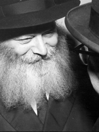

The Rebbe and Three Stories

The scene is set at the Friday night meal at the home of the shliach, Rabbi Yehuda Schechter in Miami. Dozens of guests and mekuravim of the Chabad house are sitting at the table. Even after the meal is over, they continue to sit and farbreng.
One of the guests, who looked like a regular Chassid, wearing a sirtuk, hat and a beard, got up and announced, “Because of Rabbi Benzion Grossman I am a Chassid of the Rebbe, and because I am a Chassid of the Rebbe my life was saved.”
Well, that was quite a dramatic statement. The room quickly quieted down. Everyone wanted to hear the story which the man soon related:
“It was the end of the 60’s. I was a student and had joined the hippie movement and wandered around, looking for meaning in life. I ended up in Eretz Yisroel at some point and met up with Rabbi Grossman. He had just opened a yeshiva for baalei t’shuva together with Rabbi Yitzchok Ginsburgh. I joined the yeshiva and was soon invited to his home.
“During the meal, Rabbi Grossman spoke enthusiastically about the obligation every Jew has to live life according to the Torah. He emphasized that the Creator has much nachas from every mitzva that a Jew does. He spoke in Hebrew and someone translated into English. What he said about a mitzva giving Hashem such nachas made a deep impression on me.
“In the months to follow, I began thinking about the Jewish people, its existence, wanderings and travails. I continued to seek a more meaningful path in life. When I finished learning in Yerushalayim, I went to the Chabad yeshiva in Morristown where I finally gave myself over entirely to the Jewish way of life. I abandoned my hippie life and the secular world that I had belonged to until that time.
“After a number of years, in the course of which I learned very diligently, I decided that I had to learn a profession. I consulted with friends about what avenue to pursue. A good friend advised me to pursue medicine, specifically recommending that I study to become a physician’s assistant. It entailed a four year program and the salary was high, nearly as high as a doctor’s.
“Since I had become a Chabad Chassid, I didn’t do anything without asking the Rebbe. I submitted a note and received a positive response and a bracha. I began the program which wasn’t easy since it was in addition to my Jewish learning. I was studying in yeshiva most of the day.
“I finally finished the program and received my degree. Then, to my dismay, a few weeks later the US government decided that from now on, a PA did not have to spend so many years on acquiring a degree; a shortened course of study would be sufficient.
“I was very upset, having just spent four years of my life on this course and it had cost a pretty penny too. Now, to become a PA was a fraction of the cost and time. The more I thought about it, the more disturbed I became by the Rebbe’s answer to pursue it. I knew that the Rebbe has spiritual vision; even if I didn’t understand why I had to go through this, the Rebbe surely knew.
“Several years passed and I found out why I had to study medicine for so many years. I was in Georgia when I felt terrible stomach pains. After being examined, I was hospitalized. The doctors told me I had a serious, rare illness. Numerous doctors came to my bedside to check out this interesting disease and they immediately began a round of treatments.
“I was very worried. I called my family and asked them to come and be with me. I underwent a series of treatments that were very peculiar. I had never encountered such a thing in the world of medicine. The medication they gave me was unfamiliar. My intuition told me that something was very wrong. At some point, I realized that the doctors had decided to use me as their guinea pig and were giving me experimental medications and treatments to see whether they were effective or not (or even harmful).
“Having caught on to this, I asked to speak to the doctors and the head of the department immediately. They came to my bedside and I yelled at them, saying – why aren’t you giving me the proper treatment and doing illegal experiments instead? I warned them that if they didn’t give me the proper treatment, I would call the police.
“They were stunned by my outburst. I was a bearded Jew whom they considered a fanatic that didn’t know his arm from his leg, and yet, I had figured out what they were up to!
“The hospital administration, members of the department and all the doctors apologized to me and promised to give me the proper treatment.
“Now I understood what the Rebbe had seen. He knew why I had to study medicine for four years.”
This story was told by Rabbi Benzion Grossman of Migdal HaEmek, who happened to be present that Friday night.
DISAPPOINTMENT
Another story from Rabbi Benzion Grossman:
“I am disappointed with the Lubavitcher Rebbe,” said the taxi driver on the way from Boro Park to 770. He drove quickly at my request, since I wanted to daven Mincha with the Rebbe at 3:15. En route, I had asked the Israeli driver whether he had ever visited the Rebbe, and this was his response. I was taken aback.
I asked him what he meant and he told me:
“When I lived in Eretz Yisroel, I worked in renovations in Bat Yam. The economy wasn’t great and for a long time I had a hard time making it until the end of the month on what I earned. Friends suggested that I go to the US, saying I would surely find a good job there.
“I went to New York with high expectations. I had a hard time finding profitable work until I took a job with a contractor, a Bobover Chassid who lived in Boro Park.
“I became a regular visitor to the homes of Chassidishe people in Boro Park and nearby neighborhoods in the course of my work on their homes. I was very interested in the way of life of religious people. It was a whole new world for me.
“I found the homes of Rabbanim and Admurim even more fascinating because I always imagined their homes to be simple, but I found out that they lived very extravagantly. They had beautiful homes and drove new cars.
“My manager liked my work and whenever work needed to be done in the homes of Rabbanim, I was the man he sent to do the job. I would write descriptions of what I saw in these homes to my family and friends in Bat Yam.
“One day, the contractor told me that in a few days I would have to fix the windows in the home of the Lubavitcher Rebbe in Crown Heights. I looked forward to the visit. I imagined I would see expensive wall-to-wall carpets, new, modern furniture and so on. After all, he wasn’t an ordinary rabbi but the Rebbe of all the Jewish people! I had seen the work of his Chassidim in Bat Yam and other places in Eretz Yisroel.
“On the appointed day, at the appointed time, I knocked at the door and a Chassid ushered me in. He showed me what needed fixing. I followed him but wasn’t listening to what he said; my attention was glued to the old tapestries on the walls and the furniture that looked many decades old. The shock left me dumbfounded. I had expected a veritable palace and this house was modest in the extreme.
“On the one hand, I was disappointed, but on the other hand, I couldn’t help but conclude that the Lubavitcher Rebbe is greater than all other rabbinic figures that I knew, as evidenced by the fact that he lived simply and in such modest fashion.
“During the days that I spent working on the windows, I expected to meet the Rebbe, at least once. However, since I finished my work in the afternoon, I did not see the Rebbe who arrived home in the evening and once again, I was disappointed.”
Continued Rabbi Grossman:
“I heard this story from the taxi driver and felt I must bring him to see the Rebbe. I explained to him that the Rebbe would soon be davening Mincha and it was a good opportunity to see him. He agreed to accompany me, at which point we realized we had been so engrossed in conversation that he had taken a wrong turn.
“We arrived at 770 at 4:00. I told the driver that the Rebbe had surely finished davening and was in his room. I saw that he was disappointed that he had missed seeing the Rebbe yet again.
“I wanted to pay him, but I only had big bills. I got out of the taxi to get change and saw a group of bachurim standing near 770. They were saying how late it was and the Rebbe had still not come down for Mincha.
“I went back to the taxi and took the driver into 770. A few moments later the Rebbe came in for Mincha. At the end of davening, the driver said, ‘When the Rebbe entered the shul, he gave me a special look, as though to say – I know you wanted to see me so I waited especially for you!’”
HE EXPERIENCED THE REBBE’S RUACH HA’KODESH
A Litvishe fellow in Kollel came to New York for Shavuos. He went to 770 and asked Rabbi Groner for an appointment for yechidus. When Rabbi Groner was told that the man would not be spending Yom Tov in 770, he told him that only those guests who spent Yom Tov in 770 could have yechidus. The man begged him for an appointment and was finally allotted five minutes.
When it was his turn and five minutes had gone by, Rabbi Groner went in to indicate that the man’s time was up. The Rebbe motioned that the man should stay. He finally left after fifteen minutes and he emotionally told Rabbi Groner what happened.
“Before I went in to see the Rebbe, I had prepared many topics that I wanted to discuss. When you told me that I had only five minutes, I picked three of the topics and wrote them on the note that I handed the Rebbe as soon as I walked in. The Rebbe read the note, looked up, and began discussing a topic that I hadn’t written. At first, I thought the Rebbe was continuing to talk about the topic he had discussed with the person who had yechidus before me. Then I suddenly remembered that I had wanted to discuss this topic with the Rebbe but had left it out.
“The Rebbe finished talking about that topic and went on to the next topic which, amazingly, was also one of the topics I had wanted to discuss. The Rebbe went from topic to topic, all of which I had wanted to discuss but hadn’t written in the note. My conclusion is – the Rebbe has ruach ha’kodesh!”
Berger. "The Rebbe and Three Stories." Beis Moshiach, no. 825 (February 29, 2012).